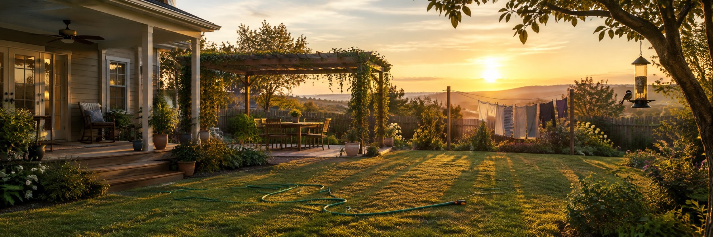
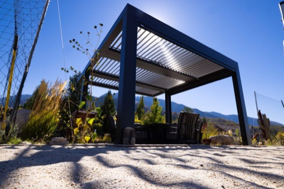
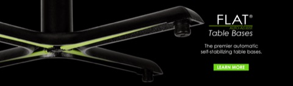
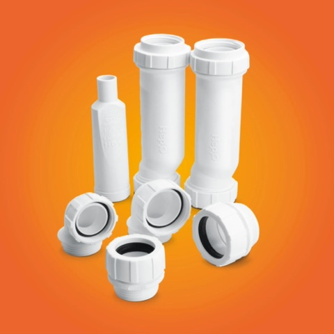
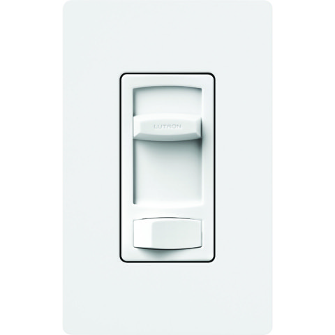
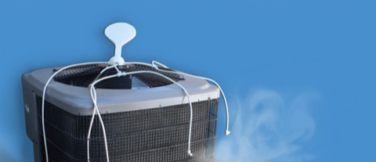
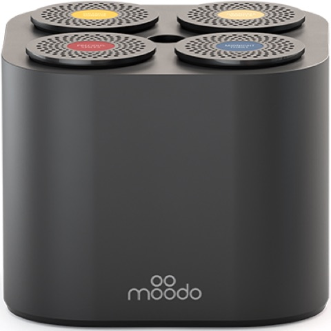
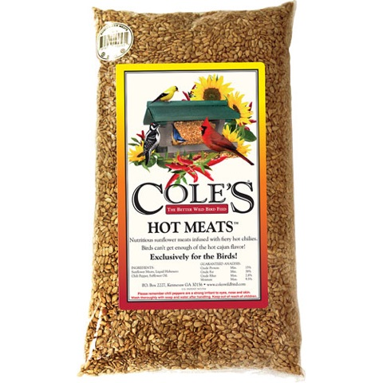

Fixes, comforts and odd improvements for the house and the lot it sits on.

Pergola slats that rotate to open or close the roof.
Spring-loaded feet that level a table on uneven floors.
A drain cap that lets water out and nothing back up.
A fan that switches itself on and off by temperature.
Smooth fader control for ceiling fan speed.
A mesh screen shades the outdoor AC unit without blocking its airflow, a mister helps it shed heat, and a pan underneath catches the water to recycle it.
Strap over the whole roof to hold it down in a hurricane.
Vents that open to release pressure so the roof stays on.
A template kit for setting an above-ground pool level on a slope.
Fire ice pellets into the lawn to aerate soil; the ice melts and waters the roots.
A bean bag sold with a solid foam block that you crush into the filling yourself.
No Soliciting signs with some kind of verified backing.
Fill the walls of a sound booth with sand to deaden it.
A fan pulls air through a radiator-like grid of fine electric arcs that burn up dust, smoke and germs as they pass. A catalyst behind it mops up the ozone.
A smart plug-in diffuser that blends several scents from an app.
An alarm clock that wakes you with sirens, crashes and other crisis sounds.
A small corner shop built into the apartment complex.
Hot pepper in the seed: birds don't taste it, squirrels do.
A blanket around Dozer's neck during fireworks.
Somebody got there. These are real products and services that do what the idea does. Checked November 2026. Pictures come from the makers' own pages, or from Wikipedia.







Concept art only.